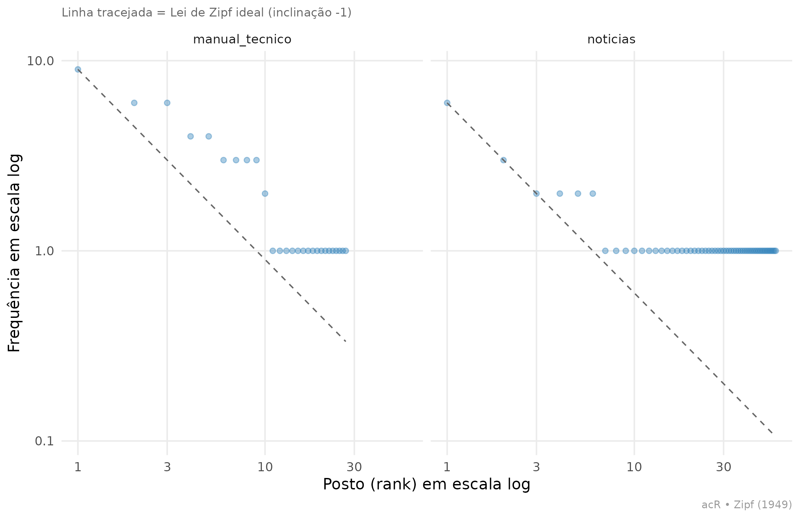
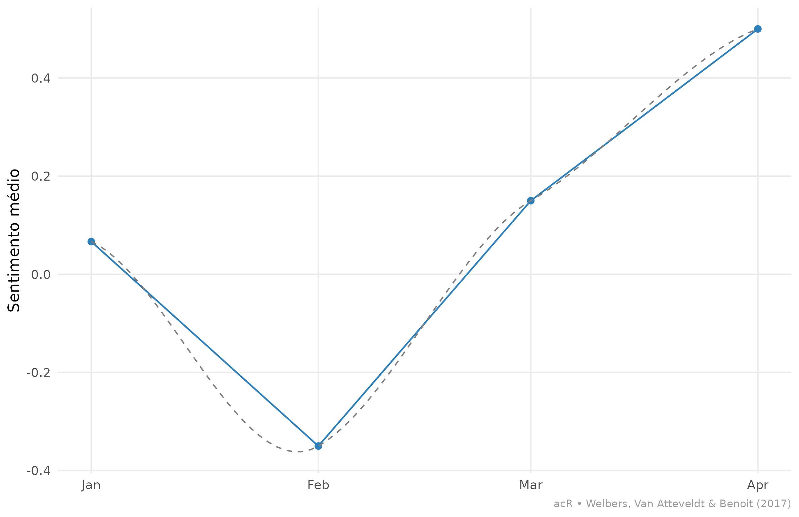

Esta vignette percorre o módulo quantitativo do
acR em cima de um corpus de discursos parlamentares
fabricado para o exemplo. Cada etapa é apresentada com uma pergunta
metodológica (por que faço isso?) antes do código e do
gráfico.
O caminho é o clássico da análise de conteúdo estatística: corpus → limpeza → tokenização → frequências → distintividade → visualização.
Qual métrica responde qual pergunta?
O módulo quantitativo tem dezoito técnicas, agrupadas em cinco famílias. Aprender qual usar em cada situação vale mais que decorar sintaxe: a pergunta de pesquisa escolhe a técnica, não o contrário.
Frequência, distintividade e coocorrência
| Pergunta | Técnica | Função |
|---|---|---|
| Que palavras dominam o corpus como um todo? | Frequência bruta |
ac_count() → ac_top_terms()
|
| Que palavras são distintivas de cada documento vs. o resto? | TF-IDF |
ac_tf_idf() → ac_plot_tf_idf()
|
| Que palavras separam um grupo do outro estatisticamente? | Keyness |
ac_keyness() → ac_plot_keyness()
|
| Que palavras andam juntas (associação sintagmática)? | Coocorrência |
ac_cooccurrence() →
ac_plot_cooccurrence()
|
| Que bigramas/trigramas aparecem juntos mais do que o esperado pelo acaso? | Colocações | ac_collocations() |
| Onde no texto um termo aparece com mais frequência? | X-ray plot | ac_plot_xray() |
| Em que contexto exato um termo aparece a cada ocorrência? | Concordância/KWIC | ac_kwic() |
| Panorama visual rápido para relatório ou apresentação | Nuvem de palavras |
ac_wordcloud() (ggwordcloud) |
Diagnóstico do corpus
| Pergunta | Técnica | Função |
|---|---|---|
| O texto é fácil ou difícil de ler? | Legibilidade | ac_readability() |
| O vocabulário é rico ou repetitivo? | Diversidade lexical | ac_lexical_diversity() |
| O corpus se comporta como linguagem natural (não dominado por ruído)? | Lei de Zipf | ac_plot_zipf() |
Série temporal
| Pergunta | Técnica | Função |
|---|---|---|
| Um termo, sentimento ou qualquer métrica muda ao longo do tempo? | Série temporal |
ac_temporal() → ac_plot_temporal()
|
Escalas e mapas
| Pergunta | Técnica | Função |
|---|---|---|
| Onde cada documento se posiciona num espectro contínuo (favorável↔︎desfavorável)? | Wordscores | ac_wordscores() |
| Como grupos e termos se relacionam num mapa 2D, sem assumir tópicos latentes? | Análise de correspondência | ac_ca() |
Dicionários e léxicos
| Pergunta | Técnica | Função |
|---|---|---|
| Quanto do texto pertence a cada categoria temática que eu defino? | Dicionário multi-categoria | ac_dictionary() |
| Que emoções (não só positivo/negativo) o texto expressa? | Léxico de emoção | ac_emotion() |
| Meu dicionário classifica bem, comparado a uma codificação humana? | Validação de dicionário | ac_dictionary_validate() |
Não é redundância. As três métricas de frequência respondem perguntas diferentes:
- Frequência bruta conta ocorrências. É a primeira olhada, mas os termos no topo tendem a ser genéricos (mesmo depois de tirar stopwords).
- TF-IDF penaliza termos que aparecem em muitos documentos: destaca o vocabulário próprio de cada texto. Sem grupo definido a priori.
- Keyness compara grupos com um teste estatístico (χ² ou log-likelihood). Precisa de uma variável categórica no corpus.
Para descobrir tipologias emergentes sem categoria a priori, veja
vignette("cluster") e vignette("lda") (não
supervisionado). Para rotular com categorias teóricas, veja
vignette("qualitativo-llm") (assistido).
Sequência sugerida para reportar resultados
Um erro comum em análise de conteúdo computacional é aplicar uma técnica isoladamente, sem o diagnóstico que justifica o resultado. A ordem abaixo segue a lógica de qualquer método reportável: primeiro você mostra que o corpus é adequado para a análise, depois descreve seu conteúdo, e só então compara grupos ou constrói escalas.
| Ordem | Etapa | Por que vem nessa posição |
|---|---|---|
| 1 | Limpeza e tokenização (§2-3) | Sem isso, qualquer contagem é dominada por artigos e preposições, mascarando o sinal. |
| 2 | Diagnóstico do corpus (§10-11) | Legibilidade e diversidade lexical descrevem o material em si: um corpus muito homogêneo ou pouco diverso limita o que qualquer análise posterior pode revelar. Um desvio forte da Lei de Zipf pode sinalizar ruído ou dados malformados (ela vale de forma muito geral para texto natural; Piantadosi, 2014), embora não prove sozinha que os dados estão bons. |
| 3 | Frequência e distintividade (§5, §7) | Primeiro você descreve o vocabulário geral (frequência), depois o que é próprio de cada documento (TF-IDF). Isso ancora a leitura qualitativa dos resultados seguintes. |
| 4 | Comparação entre grupos (§8, §13) | Keyness e série temporal respondem à pergunta comparativa central da maioria dos estudos: o que muda entre grupos ou ao longo do tempo. Só faz sentido depois que o vocabulário geral já foi descrito. |
| 5 | Associação e contexto (§9, §12) | Coocorrência, colocações e KWIC aprofundam por que um termo é relevante, qualificando os achados das etapas 3-4 com evidência de uso em contexto. |
| 6 | Escalas e classificação (§14-16) | Wordscores, análise de correspondência e dicionários produzem medidas derivadas (posição num espectro, categoria temática). Por dependerem do vocabulário já mapeado nas etapas anteriores, vêm depois, não antes. |
| 7 | Validação | Toda classificação por dicionário (§15) precisa de
ac_dictionary_validate() contra uma amostra humana antes de
ir para o relatório final: é o que transforma uma heurística em achado
defensável (Grimmer & Stewart, 2013). |
Essa ordem é um ponto de partida, não uma regra rígida: um estudo focado só em descrever o corpus pode parar na etapa 2; um estudo que já tem uma variável de grupo definida a priori pode ir direto da etapa 1 à 4. O que não muda é a lógica: descreva antes de comparar, e valide antes de publicar.
1. Construir o corpus
O ac_corpus() padroniza qualquer data.frame
em um objeto com colunas fixas doc_id e text,
mantendo os metadados que você quiser preservar para comparações
posteriores.
textos <- c(
"O governo anunciou nova politica fiscal para reduzir o deficit público.",
"A oposicao critica o aumento dos gastos e da divida pública no orcamento.",
"Parlamentares debatem a reforma tributária e o imposto de renda das familias.",
"O presidente vetou o projeto que ampliava beneficios sociais para os pobres.",
"O Senado aprovou o marco legal para investimentos em infraestrutura logistica.",
"Deputados votam pela reducao da carga tributária para pequenas empresas.",
"A politica monetária do Banco Central eleva a taxa de juros para conter inflacao.",
"A inflacao acima da meta preocupa economistas e o mercado financeiro.",
"O relator defendeu emendas ao texto do orcamento com foco em saude e educacao.",
"A comissao aprovou o projeto que amplia beneficios sociais no interior.",
"O ministro afirmou que a reforma tributária simplifica o sistema para empresas.",
"Lideres da oposicao pediram vistas ao projeto na comissao de constituicao."
)
meta <- data.frame(
text = textos,
tema = c("fiscal","fiscal","tributário","social","infraestrutura",
"tributário","monetário","monetário","fiscal","social",
"tributário","fiscal"),
stringsAsFactors = FALSE
)
corpus <- ac_corpus(meta)
corpus
#>
#> ── Corpus acR ──────────────────────────────────────────────────────────────────
#> • Documentos: 12
#> • Metadados: 1 coluna
#> • Idioma: "pt"
#>
#> # A tibble: 12 × 3
#> doc_id text tema
#> <chr> <chr> <chr>
#> 1 doc_1 O governo anunciou nova politica fiscal para reduzir o deficit p… fisc…
#> 2 doc_2 A oposicao critica o aumento dos gastos e da divida pública no o… fisc…
#> 3 doc_3 Parlamentares debatem a reforma tributária e o imposto de renda … trib…
#> 4 doc_4 O presidente vetou o projeto que ampliava beneficios sociais par… soci…
#> 5 doc_5 O Senado aprovou o marco legal para investimentos em infraestrut… infr…
#> 6 doc_6 Deputados votam pela reducao da carga tributária para pequenas e… trib…
#> # ℹ 6 more rows2. Limpeza: por que remover stopwords?
Sem remoção de stopwords, os termos mais frequentes de
qualquer corpus em português são artigos, preposições e conjunções
(o, a, de, que,
para…). Eles carregam pouquíssima informação temática e
sufocam qualquer padrão real de vocabulário. A regra prática em análise
de conteúdo (Sampaio & Lycarião, 2021) é sempre remover
stopwords antes de contar frequências ou calcular
distintividade.
O ac_clean() aceita o parâmetro
remove_stopwords = "pt" para aplicar uma lista de
stopwords portuguesas curada. Você pode adicionar seu próprio
glossário via extra_stopwords.
corpus_limpo <- ac_clean(
corpus,
remove_stopwords = "pt",
extra_stopwords = c("pra", "pro") # opcional: coloquiais
)
corpus_limpo
#>
#> ── Corpus acR ──────────────────────────────────────────────────────────────────
#> • Documentos: 12
#> • Metadados: 1 coluna
#> • Idioma: "pt"
#>
#> # A tibble: 12 × 3
#> doc_id text tema
#> <chr> <chr> <chr>
#> 1 doc_1 governo anunciou nova politica fiscal reduzir deficit público fisc…
#> 2 doc_2 oposicao critica aumento gastos divida pública orcamento fisc…
#> 3 doc_3 parlamentares debatem reforma tributária imposto renda familias trib…
#> 4 doc_4 presidente vetou projeto ampliava beneficios sociais pobres soci…
#> 5 doc_5 senado aprovou marco legal investimentos infraestrutura logistica infr…
#> 6 doc_6 deputados votam reducao carga tributária pequenas empresas trib…
#> # ℹ 6 more rows3. Tokenização
ac_tokenize() quebra cada documento em unidades de
análise. Com n = 1L são unigramas (palavras); com
n = 2L, bigramas (“reforma tributária”). Bigramas são úteis
quando você quer capturar expressões compostas que
perdem sentido tokenizadas separadamente.
tokens <- ac_tokenize(corpus_limpo, n = 1L)
head(tokens, 12)
#> # A tibble: 12 × 3
#> doc_id token_id token
#> <chr> <int> <chr>
#> 1 doc_1 1 governo
#> 2 doc_1 2 anunciou
#> 3 doc_1 3 nova
#> 4 doc_1 4 politica
#> 5 doc_1 5 fiscal
#> 6 doc_1 6 reduzir
#> 7 doc_1 7 deficit
#> 8 doc_1 8 público
#> 9 doc_2 1 oposicao
#> 10 doc_2 2 critica
#> 11 doc_2 3 aumento
#> 12 doc_2 4 gastos4. Frequência
Contagem de ocorrências por documento e depois agregação.
ac_count() já retorna no formato tidy pronto para
pipeline com dplyr e ggplot2.
contagem <- ac_count(corpus_limpo)
contagem
#> # A tibble: 88 × 3
#> doc_id token n
#> <chr> <chr> <int>
#> 1 doc_1 anunciou 1
#> 2 doc_1 deficit 1
#> 3 doc_1 fiscal 1
#> 4 doc_1 governo 1
#> 5 doc_1 nova 1
#> 6 doc_1 politica 1
#> 7 doc_1 público 1
#> 8 doc_1 reduzir 1
#> 9 doc_10 amplia 1
#> 10 doc_10 aprovou 1
#> # ℹ 78 more rows5. Top termos: o vocabulário do corpus
O gráfico abaixo mostra as 12 palavras mais frequentes. Agora, com stopwords removidas, é possível ler os temas dominantes: reforma, projeto, tributária, orçamento, etc.
top <- ac_top_terms(contagem, n = 12)
ac_plot_top_terms(top) +
ggplot2::labs(
title = "Termos mais frequentes no corpus",
subtitle = "Discursos legislativos - 12 documentos fabricados",
caption = "acR - vignette Análise Quantitativa"
)
Como ler este gráfico
Onde olhar. Cada barra é uma palavra, e o comprimento é quantas vezes ela aparece somando os 12 discursos. Leia de cima para baixo: a primeira barra é a palavra mais usada do corpus.
O que este exemplo mostra. tributária e projeto estão no topo, com 3 ocorrências cada; as outras 10 palavras do gráfico aparecem 2 vezes. Todo o resto do vocabulário aparece uma vez só e por isso ficou de fora do top 12.
Em palavras simples. O corpus fala muito de reforma tributária e de projetos em tramitação. É o retrato do vocabulário mais usado, ainda não do vocabulário mais característico.
Cuidado. Frequência não é relevância. projeto está no topo porque quase todo discurso legislativo fala de projeto, não porque seja um tema. Para achar o que distingue um texto dos outros, a ideia é dar menos peso a palavras espalhadas por todos os documentos (Spärck Jones, 1972): é o que fazem o TF-IDF (§7) e o keyness (§8). E com 12 discursos, a diferença entre 3 e 2 ocorrências é uma única palavra.
6. Nuvem de palavras
Uma nuvem funciona como panorama visual rápido, útil para relatórios e apresentações. Não substitui análise numérica: o tamanho da palavra é proporcional à frequência, mas a posição no plot é aleatória.
Desde a versão 0.3.1 o ac_wordcloud() prefere
automaticamente o motor ggwordcloud (retorna um
ggplot, com tipografia mais legível e layout consistente
com o tema do pacote); se ele não estiver instalado, cai para o
wordcloud clássico. Você pode forçar via
backend = "ggwordcloud" ou
backend = "wordcloud".
ac_wordcloud(contagem, max_words = 40, title = "Panorama do corpus")
#> Warning in wordcloud_boxes(data_points = points_valid_first, boxes = boxes, :
#> Some words could not fit on page. They have been removed.
6.1 Nuvem comparativa entre grupos
Quando o corpus tem uma variável de agrupamento (partido, período, tema, etc.), a nuvem comparativa mostra lado a lado os termos mais distintivos de cada grupo, pontuados por TF-IDF calculado tratando cada grupo como um “documento”. Aceita 2, 3 ou mais grupos.
# Nosso corpus tem 5 temas distintos: todos entram na comparativa.
ac_plot_wordcloud_comparative(
corpus,
group = tema,
max_words = 25,
title = "Termos distintivos por tema"
)
#> Warning in wordcloud_boxes(data_points = points_valid_first, boxes = boxes, :
#> Some words could not fit on page. They have been removed.
#> Warning in wordcloud_boxes(data_points = points_valid_first, boxes = boxes, :
#> Some words could not fit on page. They have been removed.
#> Warning in wordcloud_boxes(data_points = points_valid_first, boxes = boxes, :
#> Some words could not fit on page. They have been removed.
#> Warning in wordcloud_boxes(data_points = points_valid_first, boxes = boxes, :
#> Some words could not fit on page. They have been removed.
#> Warning in wordcloud_boxes(data_points = points_valid_first, boxes = boxes, :
#> Some words could not fit on page. They have been removed.
O layout usa ggwordcloud com facets quando disponível
(backend = "auto"), e cai em geom_text com
jitter reproduzível quando não. A semente do posicionamento é controlada
por seed = 42L. Cores vêm de ac_palette() por
padrão: uma por grupo.
7. TF-IDF: o que é distintivo em cada documento?
Frequência bruta favorece palavras que aparecem em quase todos os documentos (mesmo depois de stopwords). O TF-IDF (term frequency × inverse document frequency) penaliza termos comuns e destaca vocabulário próprio de cada grupo, útil quando o corpus é composto por textos com propostas ou temas distintos.
Com 12 discursos curtos e cada palavra aparecendo em 1–2 documentos, o TF-IDF por documento resulta em barras quase todas iguais (todo termo único vale o mesmo). O padrão fica mais legível agregando por tema: tratamos cada tema como um “documento” e o TF-IDF revela o vocabulário característico de cada eixo temático do corpus.
freq_tema <- ac_count(corpus_limpo, by = "tema")
tfidf_tema <- ac_tf_idf(freq_tema, by = "tema")
ac_plot_tf_idf(tfidf_tema, by = "tema", n = 6) +
ggplot2::labs(
title = "Termos mais distintivos por tema (TF-IDF)",
subtitle = "Cada eixo temático como um documento; alta pontuação = termo característico do tema"
)
8. Keyness: o que é distintivo entre grupos?
Enquanto TF-IDF compara documento vs. corpus, keyness compara grupos: o critério que define o grupo é seu, não do pacote. Pode ser partido, período histórico, tema, região, autor, condição experimental, faixa etária, qualquer variável categórica no seu corpus. É a métrica clássica para a pergunta comparativa: “o que um grupo diz que o outro não diz?”.
Aqui comparamos os temas fiscal e tributário: quais palavras marcam cada lado?
freq_tema <- ac_count(corpus_limpo, by = "tema")
freq_2grupos <- freq_tema[freq_tema$tema %in% c("fiscal", "tributário"), ]
kn <- ac_keyness(freq_2grupos, group = "tema", target = "fiscal")
ac_plot_keyness(kn, n = 10) +
ggplot2::labs(
title = "Palavras distintivas: 'fiscal' vs. 'tributário'",
subtitle = "Barras positivas = distintivas do tema 'fiscal'"
)
Como ler este gráfico
Onde olhar. Cada barra é uma palavra. Barra para a direita (vermelha) = palavra mais usada nos textos
fiscal; para a esquerda (verde-azulada) = mais usada nos textostributário. Quanto mais comprida a barra, maior a diferença entre os dois grupos.O que este exemplo mostra. A barra mais comprida é tributária, para a esquerda: aparece 3 vezes nos textos tributários e nenhuma nos fiscais. Logo abaixo vêm reforma e empresas (2 contra 0). À direita, as maiores são orcamento e oposicao (2 vezes no fiscal, 0 no tributário). As várias barras curtas e iguais são palavras que aparecem uma única vez, só num dos lados.
Em palavras simples. Quem fala de imposto diz “reforma tributária” e fala de empresas; quem fala de contas públicas fala de orçamento e de oposição.
Cuidado. Barra comprida não é prova. Os dois grupos somam só 51 palavras, e só tributária passa do limite usual de significância (qui-quadrado de 4,55 contra 3,84), por pouco. Com contagens tão baixas o qui-quadrado é pouco confiável (Dunning, 1993, propõe o log-likelihood,
measure = "ll"); e, testando dezenas de palavras de uma vez, alguma passa do limite por acaso: com correção para comparações múltiplas (Benjamini & Hochberg, 1995), nem tributária passaria. Aqui, leia a ordem das barras como pista, não como conclusão.
9. Rede de co-ocorrência
Palavras que aparecem próximas com frequência formam agrupamentos semânticos. A rede de coocorrência mostra essas vizinhanças com base numa janela de tokens (aqui, 5 palavras à esquerda e à direita).
Útil para: identificar frames, mapear associações conceituais e encontrar combinações de palavras que definem sub-temas dentro do corpus.
cooc <- ac_cooccurrence(corpus_limpo, window = 5L, min_count = 2L)
if (requireNamespace("ggraph", quietly = TRUE)) {
ac_plot_cooccurrence(cooc, top_n = 25) +
ggplot2::labs(
title = "Rede de coocorrência (janela = 5, freq mínima = 2)",
subtitle = "Arestas conectam termos que co-ocorrem no mesmo contexto"
)
}
Como ler este gráfico
Onde olhar. Cada bolinha (nó) é uma palavra; cada linha (aresta) liga duas palavras que apareceram a até 5 palavras de distância uma da outra pelo menos 2 vezes (
min_count = 2L). Bolinha maior = palavra ligada a mais palavras diferentes; linha mais grossa = par que se encontrou mais vezes.O que este exemplo mostra. Com o filtro de 2 encontros, sobram só 6 ligações, que formam duas “ilhas” separadas: {projeto, beneficios, sociais, comissao} e {tributária, reforma, empresas}. projeto é o nó mais conectado (3 ligações).
Em palavras simples. As ilhas são subtemas: um bloco fala de projetos de benefícios sociais em comissão; o outro, de reforma tributária e empresas.
Cuidado. Aparecer perto não é ter o mesmo sentido: é só proximidade no texto. A posição das bolinhas no desenho é calculada para evitar sobreposição (algoritmo de Fruchterman & Reingold,
- e muda a cada rodada: só as ligações têm significado, a distância no papel não. E com
min_count = 2, um par entra com apenas 2 encontros; em corpus real, use 5 ou mais.
9.1 Trocando o peso: PMI em vez de contagem
A rede padrão pondera arestas pela contagem de coocorrências: termos frequentes tendem a dominar. O PMI (pointwise mutual information) mede o quanto duas palavras aparecem juntas acima do esperado por acaso; revela pares surpreendentes, mesmo que raros.
if (requireNamespace("ggraph", quietly = TRUE)) {
ac_plot_cooccurrence(cooc, top_n = 25, weight = "pmi") +
ggplot2::labs(
title = "Rede de coocorrência ponderada por PMI",
subtitle = "Destaca pares associados além do esperado por acaso"
)
}
9.2 Trocando o layout
O layout controla como os nós são posicionados no plano. O padrão
"fr" (Fruchterman-Reingold) minimiza cruzamentos;
"kk" (Kamada-Kawai) respeita distâncias de grafo;
"circle" alinha tudo num anel: útil para corpora pequenos
onde a topologia importa menos que a legibilidade.
if (requireNamespace("ggraph", quietly = TRUE)) {
ac_plot_cooccurrence(cooc, top_n = 25, layout = "circle") +
ggplot2::labs(
title = "Rede de coocorrência: layout circular",
subtitle = "Todas as palavras num anel; arestas mostram o grafo cru"
)
}
9.3 Coocorrência como matriz (heatmap)
Quando a rede fica saturada de arestas, um heatmap
das top-N palavras pode ser mais legível: linhas e colunas são termos, e
a intensidade da célula é a coocorrência. Não requer
ggraph.
top_tokens <- ac_top_terms(ac_count(corpus_limpo), n = 12)$token
cooc_mat <- cooc[cooc$word1 %in% top_tokens & cooc$word2 %in% top_tokens, ]
ggplot2::ggplot(cooc_mat,
ggplot2::aes(word1, word2, fill = cooc)) +
ggplot2::geom_tile(color = "white") +
ggplot2::scale_fill_gradient(low = "#F1F5F9", high = ac_palette(1)) +
ggplot2::labs(
title = "Matriz de coocorrência (top 12 termos)",
subtitle = "Alternativa ao grafo quando a rede fica densa",
x = NULL, y = NULL, fill = "cooc."
) +
theme_ac() +
ggplot2::theme(
axis.text.x = ggplot2::element_text(angle = 45, hjust = 1)
)
Novidades: diagnóstico de corpus, escalas e dicionários
As seções anteriores giram em torno de discursos parlamentares: um domínio comum na ciência política, mas o módulo quantitativo não é específico a ele. As técnicas a seguir são novas no pacote e são apresentadas com exemplos de outros domínios (avaliações de produto, atendimento ao cliente, notícias) para deixar claro que servem a qualquer corpus de texto.
10. Legibilidade e diversidade lexical
Duas perguntas distintas sobre a forma do texto, independente do conteúdo:
-
Legibilidade (
ac_readability()): o texto é fácil de ler? Adapta o índice de Flesch para português (Martins et al., 1996), combinando palavras por frase e sílabas por palavra. Útil para comparar, por exemplo, a complexidade de um manual técnico com a de um texto de divulgação para o público geral. -
Diversidade lexical
(
ac_lexical_diversity()): o vocabulário é rico ou repetitivo? A TTR cai mecanicamente quando o texto cresce, porque palavras começam a se repetir. O C de Herdan (Herdan, 1960) atenua esse efeito, mas não o elimina (Tweedie & Baayen, 1998); o MTLD foi a medida menos sensível ao tamanho do texto entre as avaliadas por McCarthy & Jarvis (2010), que a recomendam para comparar textos de tamanhos diferentes.
avaliacoes <- data.frame(
id = paste0("rev", 1:4),
texto = c(
"Este produto é incrível. Funciona perfeitamente bem e chegou rápido.",
"O manual técnico especifica que a calibração requer ajuste periódico do sensor piezoelétrico conforme a norma vigente, o que demanda qualificação especializada do operador responsável pela manutenção preventiva do equipamento.",
"Bom. Chegou. Funciona. Recomendo.",
"A experiência de uso revelou inconsistências na usabilidade da interface, comprometendo a jornada do consumidor e gerando fricção considerável ao longo do processo de integração do dispositivo ao ecossistema existente."
),
stringsAsFactors = FALSE
)
corpus_aval <- ac_corpus(avaliacoes, text = texto, docid = id)
ac_readability(corpus_aval)
#> # A tibble: 4 × 6
#> doc_id n_palavras n_frases n_silabas flesch nivel
#> <chr> <int> <int> <dbl> <dbl> <chr>
#> 1 rev1 10 2 24 40.7 dificil
#> 2 rev2 30 1 84 -18.5 muito dificil
#> 3 rev3 4 4 10 36.3 dificil
#> 4 rev4 30 1 81 -10.0 muito dificilComo ler esta tabela
Onde olhar. Olhe a coluna
flesch(quanto maior, mais fácil de ler) e a colunanivel, que traduz o número em palavras. As colunasn_palavras,n_frasesen_silabasmostram de onde o número veio.O que este exemplo mostra. As duas avaliações curtas ficam em difícil:
rev1com 40,7 erev3com 36,3. O manual técnico (rev2, −18,5) e o texto corporativo (rev4, −10,0) caem em muito difícil, com valores negativos: os dois têm uma frase só de 30 palavras e quase 3 sílabas por palavra.Em palavras simples. O índice pune duas coisas: frases longas e palavras longas.
rev2erev4têm as duas; por isso ficam muito abaixo das avaliações curtas.Cuidado. O índice não tem teto nem piso (dá negativo), e as faixas de
nivelforam calibradas em livros didáticos (Martins et al., 1996), não em avaliações de produto. Até “Bom. Chegou. Funciona. Recomendo.” sai difícil (36,3): com só 4 palavras, a média de 2,5 sílabas por palavra pesa demais na fórmula. Use o índice para comparar textos do mesmo tipo, não para dar uma nota isolada.
ac_lexical_diversity(corpus_aval)
#> # A tibble: 4 × 6
#> doc_id n_tokens n_types ttr herdan_c mtld
#> <chr> <int> <int> <dbl> <dbl> <dbl>
#> 1 rev1 10 10 1 1 10
#> 2 rev2 30 25 0.833 0.946 50.4
#> 3 rev3 4 4 1 1 4
#> 4 rev4 30 25 0.833 0.946 50.4Como ler esta tabela
Onde olhar. Olhe a coluna
mtldjunto comn_tokens(quantas palavras o texto tem).ttré a fração de palavras diferentes (1 = nenhuma repetida).O que este exemplo mostra.
rev2erev4têm 30 palavras, 25 diferentes, e MTLD de 50,4. Járev1erev3têm MTLD igual ao próprio número de palavras (10 e 4): nenhuma palavra se repete neles.Em palavras simples. O MTLD responde “quantas palavras, em média, o autor escreve antes de começar a se repetir” (McCarthy & Jarvis, 2010). Quando o texto acaba antes de qualquer repetição, a resposta possível é só “o texto inteiro”, e por isso o valor coincide com o tamanho.
Cuidado. Com textos tão curtos o MTLD não mede riqueza de vocabulário. Ele foi validado em textos de cerca de 100 a 2.000 palavras (McCarthy & Jarvis, 2010) e fica instável abaixo de ~100 (Koizumi, 2012). Os 4 exemplos (4 a 30 palavras) servem para mostrar o cálculo, não para comparar os autores; e não existem faixas universais de “MTLD alto” ou “baixo”.
ac_plot_lexical_diversity(ac_lexical_diversity(corpus_aval), group_col = "doc_id",
metric = "mtld", type = "bar")
Uma visão alternativa, útil quando há muitos documentos: um scatter plot de legibilidade por diversidade lexical, cruzando as duas métricas da seção num só gráfico, para ver se textos difíceis de ler também tendem a ser lexicalmente mais ricos (ou se as duas dimensões são independentes).
leg <- ac_readability(corpus_aval)
div <- ac_lexical_diversity(corpus_aval)
cruz <- merge(leg, div, by = "doc_id")
ggplot2::ggplot(cruz, ggplot2::aes(x = flesch, y = mtld, label = doc_id)) +
ggplot2::geom_point(color = ac_palette(1), size = 3) +
ggplot2::geom_text(vjust = -1, size = 3.2) +
ggplot2::labs(
title = "Legibilidade vs. diversidade lexical",
subtitle = "Cada ponto é um documento; eixos sem relação necessária entre si",
x = "Flesch (legibilidade)", y = "MTLD (diversidade lexical)"
) +
theme_ac()
11. Lei de Zipf: o corpus se comporta como linguagem natural?
A Lei de Zipf (Zipf, 1949) prevê que a frequência de uma palavra é inversamente proporcional ao seu ranking: a palavra mais comum aparece aproximadamente duas vezes mais que a segunda mais comum, três vezes mais que a terceira, e assim por diante. É um diagnóstico clássico para saber se um corpus é “normal” (não dominado por um único termo repetido artificialmente, como aconteceria em dados malformados ou com erro de coleta).
freq_aval <- ac_count(corpus_aval, drop_punct = TRUE)
ac_plot_zipf(freq_aval)
Como ler este gráfico
Onde olhar. Cada ponto é uma palavra: no eixo horizontal, a posição dela no ranking (1 = a mais frequente); no vertical, quantas vezes aparece. Os dois eixos estão em escala logarítmica. A linha tracejada é a Lei de Zipf ideal, desenhada a partir do primeiro ponto: por isso o ponto 1 sempre cai em cima dela. Compare os pontos seguintes com a linha.
O que este exemplo mostra. A palavra mais frequente é do (6 vezes), seguida de a (3), que cai bem na linha. Depois os pontos param de descer e formam um patamar plano em 1: das 62 palavras diferentes, a maioria aparece uma única vez.
Em palavras simples. No começo, o corpus se comporta como a lei prevê (a 2ª palavra aparece metade das vezes da 1ª). O patamar no fim é o “chão”: nenhuma palavra pode aparecer menos de 1 vez.
Cuidado. O patamar em 1 é inevitável em corpus pequeno e não indica problema nos dados. A Lei de Zipf é uma tendência que aparece em corpora grandes (Piantadosi, 2014); com 4 textos curtos, só a parte inicial da curva é comparável. Note também que as palavras mais frequentes são do e a: este exemplo não passou por
ac_clean(), então as stopwords estão lá.
Quando o corpus tem grupos,
ac_plot_zipf(freq_tbl, by = "grupo") faceta um painel por
grupo, útil para comparar se todos os subcorpora têm comportamento
igualmente “natural” ou se algum se destoa (por exemplo, por ter sido
coletado de uma fonte com vocabulário mais técnico ou repetitivo). Um
exemplo com duas fontes bem diferentes: textos jornalísticos variados
vs. um manual técnico que repete o mesmo vocabulário especializado.
grupos_zipf <- data.frame(
id = paste0("doc", 1:12),
texto = c(
"O presidente anunciou um pacote de medidas economicas para estimular o crescimento.",
"A prefeitura inaugurou um novo parque publico no bairro central da cidade.",
"Cientistas descobriram uma nova especie de inseto na floresta amazonica.",
"O time local venceu a partida decisiva do campeonato estadual de futebol.",
"A exposicao de arte contemporanea atraiu milhares de visitantes no fim de semana.",
"Pesquisadores desenvolveram uma vacina experimental contra uma doenca rara.",
"O sistema deve ser configurado conforme o manual tecnico do equipamento.",
"Configure o equipamento tecnico seguindo o manual de configuracao tecnica.",
"O manual tecnico especifica a configuracao tecnica do sistema tecnico.",
"Consulte o manual tecnico para configurar corretamente o sistema tecnico.",
"A configuracao tecnica do equipamento segue o manual tecnico padrao.",
"O equipamento tecnico requer configuracao conforme manual tecnico oficial."
),
fonte = rep(c("noticias", "manual_tecnico"), each = 6),
stringsAsFactors = FALSE
)
corpus_zipf_grupo <- ac_corpus(grupos_zipf, text = texto, docid = id, meta = fonte)
freq_zipf_grupo <- ac_count(corpus_zipf_grupo, by = "fonte", drop_punct = TRUE)
ac_plot_zipf(freq_zipf_grupo, by = "fonte")
Como ler este gráfico
Onde olhar. Um painel por grupo. Ignore o primeiro ponto de cada painel (a linha é desenhada a partir dele, então ele sempre fica em cima). Olhe os pontos 2 a 10: se ficam acima da linha, as palavras seguintes se repetem mais do que a Lei de Zipf prevê.
O que este exemplo mostra. Em
manual_tecnico, os pontos 2 a 9 ficam bem acima da linha: depois de tecnico (9 vezes) vêm manual e o (6 cada) e várias palavras com 3 ou 4 ocorrências. Emnoticias, os pontos 2 e 3 caem em cima da linha, e a partir do 7º tudo está no patamar de 1: quase todas as palavras aparecem uma vez só.Em palavras simples. O manual repete o mesmo punhado de termos o tempo todo (vocabulário concentrado); as notícias variam muito de palavra (vocabulário espalhado). É o que se espera de um texto técnico e formulaico comparado a notícias de assuntos diversos.
Cuidado. Com 6 textos curtos por grupo, compare os grupos entre si, não cada um com a linha (Piantadosi, 2014). E repare em A maiúsculo entre as mais frequentes de
noticias: semac_clean(), “A” e “a” contam como palavras diferentes.
12. Concordância (KWIC) e colocações
Frequência bruta não mostra como uma palavra é usada. Duas ferramentas complementares respondem a essa lacuna: KWIC mostra o contexto de cada ocorrência individual; colocações medem, de forma agregada, quais pares de palavras andam juntos mais do que o acaso explicaria. São técnicas distintas que respondem perguntas diferentes, então cada uma tem sua própria subseção abaixo.
Corpus de exemplo para as duas: três registros fictícios de atendimento ao cliente.
atendimento <- data.frame(
id = paste0("call", 1:3),
texto = c(
"o cliente reclamou que o produto chegou com defeito de fabrica",
"outro cliente relatou defeito no produto depois de uma semana de uso",
"o produto sem defeito foi elogiado pelo cliente no final da ligacao"
),
stringsAsFactors = FALSE
)
corpus_atend <- ac_corpus(atendimento, text = texto, docid = id)12.1 KWIC: ver cada ocorrência em contexto
KWIC (keyword-in-context, Sinclair, 1991) lista cada ocorrência de um termo com o texto imediatamente antes e depois dele. É o primeiro passo de qualquer análise de discurso baseada em corpus (corpus-based discourse analysis): antes de interpretar por que um termo é frequente, leia como ele é usado em cada caso individual.
ac_kwic(corpus_atend, pattern = "defeito", window = 4)
#> # A tibble: 3 × 5
#> doc_id position before keyword after
#> <chr> <int> <chr> <chr> <chr>
#> 1 call1 9 o produto chegou com defeito de fabrica
#> 2 call2 4 outro cliente relatou defeito no produto depois de
#> 3 call3 4 o produto sem defeito foi elogiado pelo clienteComo ler esta tabela
Onde olhar. Leia cada linha da esquerda para a direita, como uma frase:
before(o que vem antes) +keyword(o termo buscado)
after(o que vem depois).doc_idepositiondizem onde achar o trecho no texto original.O que este exemplo mostra. As três linhas têm defeito, mas em sentidos diferentes: “chegou com defeito de fabrica” e “relatou defeito no produto” são reclamações; “o produto sem defeito foi elogiado” é o contrário, um elogio.
Em palavras simples. Uma contagem diria “defeito aparece 3 vezes = 3 reclamações”. O contexto mostra que são 2.
Cuidado. O KWIC é para ler, não para contar. É o primeiro passo da análise de discurso baseada em corpus (Sinclair, 1991): antes de interpretar por que uma palavra é frequente, leia algumas ocorrências. Em corpus grande, leia uma amostra das linhas, não todas.
12.2 Colocações: associação estatística entre palavras
Enquanto o KWIC mostra ocorrências individuais,
colocações (ac_collocations()) respondem a
uma pergunta agregada: quais bigramas/trigramas aparecem juntos mais do
que o esperado pelo acaso, medido por PMI (Church & Hanks, 1990),
log-likelihood (Dunning, 1993) ou qui-quadrado. Vai além da frequência
bruta de n-gramas: um bigrama pode ser raro e ainda assim
estatisticamente muito associado.
ac_collocations(corpus_atend, n = 2, measure = "pmi", min_count = 1)
#> # A tibble: 31 × 3
#> collocation count association
#> <chr> <int> <dbl>
#> 1 chegou com 1 5.13
#> 2 da ligacao 1 5.13
#> 3 elogiado pelo 1 5.13
#> 4 final da 1 5.13
#> 5 foi elogiado 1 5.13
#> 6 reclamou que 1 5.13
#> 7 uma semana 1 5.13
#> 8 no final 1 4.13
#> 9 cliente reclamou 1 3.54
#> 10 cliente relatou 1 3.54
#> # ℹ 21 more rowsComo ler esta tabela
Onde olhar. Cada linha é um par de palavras vizinhas. Olhe
association(o PMI: quanto maior, mais as duas aparecem juntas acima do que o acaso explicaria) e, sempre ao lado,count(quantas vezes o par apareceu).O que este exemplo mostra. As sete primeiras linhas empatam em 5,13, todas com
count = 1. Das 31 duplas, só uma aparece duas vezes: “o produto”, e ela tem PMI menor (2,96), porque “o” e “produto” são palavras frequentes, então encontrá-las juntas surpreende menos.Em palavras simples. PMI de 5,13 quer dizer que o par apareceu cerca de 35 vezes mais do que o acaso preveria (2 elevado a 5,13 ≈ 35). Aqui, 5,13 é o valor máximo possível: é o que qualquer dupla de palavras que aparecem uma vez cada recebe.
Cuidado. O PMI favorece pares raros (Church & Hanks, 1990; Evert, 2005), e o empate no topo mostra isso: são pares que ocorreram uma única vez. Num corpus real, use
min_countde 5 ou mais, oumeasure = "ll"(Dunning, 1993), que pesa melhor a frequência.
Para visualizar as colocações mais fortes em vez de ler a tabela, um gráfico de barras ordenado funciona bem com poucos pares:
colocacoes <- ac_collocations(corpus_atend, n = 2, measure = "pmi", min_count = 1)
colocacoes_top <- utils::head(colocacoes, 8)
ggplot2::ggplot(colocacoes_top,
ggplot2::aes(x = association, y = reorder(collocation, association))) +
ggplot2::geom_col(fill = ac_palette(1)) +
ggplot2::labs(
title = "Colocações mais associadas (PMI)",
x = "PMI", y = NULL
) +
theme_ac()
13. Análise temporal/diacrônica
Quando o corpus tem datas, perguntas que antes eram estáticas (quanto um termo aparece?) passam a ter uma dimensão temporal (quando ele aparece mais?). É essencial para cobertura jornalística, séries de atendimento ao cliente, ou qualquer corpus com carimbo de data (Welbers, Van Atteveldt & Benoit, 2017).
ac_temporal() é deliberadamente genérica: a coluna
numérica agregada (value_col) pode ser a saída de qualquer
outra função do pacote (score de ac_sentiment(), índice de
ac_readability(), contagem de um termo de
ac_count()…), desde que exista uma coluna de data no mesmo
data.frame. Dois parâmetros controlam a agregação:
-
unit: o tamanho da janela de tempo:"day","week","month"(padrão) ou"year". -
stat: como agregar os valores dentro de cada janela:"mean"(padrão),"sum"ou"n"(conta documentos, ignorandovalue_col).
No exemplo abaixo, sentimento já é o score de
ac_sentiment() pré-calculado para 8 notícias fictícias,
cada uma com sua data de publicação:
noticias <- data.frame(
data = as.Date("2024-01-01") + c(0, 10, 20, 35, 50, 65, 80, 95),
sentimento = c(0.2, 0.1, -0.1, -0.4, -0.3, 0.0, 0.3, 0.5)
)
serie <- ac_temporal(noticias, date_col = "data", value_col = "sentimento",
unit = "month", stat = "mean")
serie
#> # A tibble: 4 × 3
#> period value n_docs
#> <date> <dbl> <int>
#> 1 2024-01-01 0.0667 3
#> 2 2024-02-01 -0.35 2
#> 3 2024-03-01 0.15 2
#> 4 2024-04-01 0.5 1Como ler esta tabela
Onde olhar. Cada linha é um período (aqui, um mês;
periodé o primeiro dia dele). Olhe primeiron_docs(quantas notícias caíram no mês) e só depoisvalue(a média do sentimento naquele mês).O que este exemplo mostra. Janeiro tem 3 notícias e média ≈ 0,07; fevereiro cai para −0,35 (2 notícias); março volta a 0,15 (2) e abril chega a 0,50, mas com 1 notícia só.
Em palavras simples. O sentimento fica neutro em janeiro, piora em fevereiro e se recupera em março e abril.
Cuidado. Um mês com 1 documento não tem “média”: é aquele documento. O 0,50 de abril pode ser só uma notícia muito positiva. Antes de falar em tendência, confira se todos os períodos têm documentos suficientes; se não tiverem, use uma unidade de tempo maior (
unit = "year", por exemplo).
ac_plot_temporal(serie, ylab = "Sentimento médio")
#> Warning in simpleLoess(y, x, w, span, degree = degree, parametric = parametric,
#> : span too small. fewer data values than degrees of freedom.
#> Warning in simpleLoess(y, x, w, span, degree = degree, parametric = parametric,
#> : pseudoinverse used at 19723
#> Warning in simpleLoess(y, x, w, span, degree = degree, parametric = parametric,
#> : neighborhood radius 60.455
#> Warning in simpleLoess(y, x, w, span, degree = degree, parametric = parametric,
#> : reciprocal condition number 0
#> Warning in simpleLoess(y, x, w, span, degree = degree, parametric = parametric,
#> : There are other near singularities as well. 3654.8
Como ler este gráfico
Onde olhar. Os pontos azuis são os valores mensais da tabela acima, ligados por uma linha azul. A linha tracejada cinza é a tendência suavizada (LOESS; Cleveland, 1979), que ignora as oscilações de curto prazo.
O que este exemplo mostra. Os pontos descem de janeiro para fevereiro e sobem em março e abril. Os avisos logo acima do gráfico (“span too small”, “pseudoinverse used”) são o próprio
loess()dizendo que tem pontos de menos para estimar a curva.Em palavras simples. Queda no começo do período e recuperação depois.
Cuidado. Com 4 pontos, a linha tracejada é pouco confiável: ela precisa de vários pontos em cada trecho da série para suavizar (Cleveland, 1979). Aqui, confie nos pontos, não na curva. Com séries longas (dezenas de períodos, cada um com vários documentos), a curva passa a ser útil.
Uma visão alternativa, mais direta para comparar poucos períodos entre si, é o gráfico de barras:
ggplot2::ggplot(serie, ggplot2::aes(x = period, y = value)) +
ggplot2::geom_col(fill = ac_palette(1)) +
ggplot2::geom_hline(yintercept = 0, color = "grey40", linetype = "dashed") +
ggplot2::labs(
title = "Sentimento médio por mês",
subtitle = "Barras tornam mais fácil comparar período a período",
x = NULL, y = "Sentimento médio"
) +
theme_ac()
14. Escalonamento Wordscores: posicionar documentos numa escala
Às vezes queremos posicionar documentos num espectro contínuo (favorável↔︎ desfavorável, satisfeito↔︎insatisfeito) sem codificar manualmente todos eles. O método Wordscores (Laver, Benoit & Garry, 2003) faz isso em duas etapas, de forma parecida com uma régua calibrada por exemplos conhecidos:
- Aprender a régua. Você fornece um pequeno conjunto de documentos com posição já conhecida (aqui, a nota de 1 a 5 que o cliente deu à avaliação). O método observa quais palavras aparecem mais em notas altas e quais aparecem mais em notas baixas, construindo um “escore” implícito para cada palavra do vocabulário.
- Aplicar a régua. Para cada documento sem nota conhecida (os “virgens”), o método olha o vocabulário usado e calcula uma média ponderada dos escores de palavra aprendidos na etapa 1 — produzindo uma posição estimada no mesmo espectro, sem nunca ter visto uma nota para aquele texto.
O exemplo abaixo usa sete avaliações de produto com nota conhecida (de 1 a 5, incluindo duas em cada extremo para dar ao método mais vocabulário de referência) e duas avaliações sem nota, uma claramente entusiasmada e outra deliberadamente mediana, para ver se o método recupera essa diferença só pelo texto.
resenhas <- data.frame(
id = paste0("r", 1:9),
texto = c(
# Referencia: nota 5
"produto excelente, superou todas as expectativas, qualidade impecavel, recomendo muito a todos",
"amei esse produto, chegou rapido, funciona perfeitamente, melhor compra que fiz esse ano",
# Referencia: nota 4
"muito bom, chegou no prazo e funciona bem, pequenos detalhes a melhorar mas vale a pena",
# Referencia: nota 3
"produto regular, cumpre o basico, nada de especial mas tambem nao decepciona",
# Referencia: nota 2
"nao funcionou muito bem, qualidade deixou a desejar, esperava mais pelo preco pago",
# Referencia: nota 1
"pessimo, quebrado na caixa, com defeito serio, decepcao total com essa compra",
"produto horrivel, nao recomendo a ninguem, dinheiro jogado fora, qualidade pessima",
# "Virgens": sem nota, a estimar so pelo vocabulario
"simplesmente perfeito, superou expectativas, qualidade impecavel, recomendo de olhos fechados",
"produto ok, atende o basico, nem bom nem ruim, mediano"
),
stringsAsFactors = FALSE
)
corpus_resenhas <- ac_corpus(resenhas, text = texto, docid = id)
# r1, r2, r3, r4, r5, r6, r7 tem nota conhecida; r8 e r9 sao "virgens"
notas <- c(r1 = 5, r2 = 5, r3 = 4, r4 = 3, r5 = 2, r6 = 1, r7 = 1)
wordscores <- ac_wordscores(corpus_resenhas, notas, rescale = "mv")
wordscores
#> # A tibble: 9 × 4
#> doc_id score score_raw is_reference
#> <chr> <dbl> <dbl> <lgl>
#> 1 r1 4.71 4.23 TRUE
#> 2 r2 5.29 4.65 TRUE
#> 3 r3 4.18 3.83 TRUE
#> 4 r4 3.03 2.98 TRUE
#> 5 r5 2.14 2.33 TRUE
#> 6 r6 0.552 1.16 TRUE
#> 7 r7 1.45 1.82 TRUE
#> 8 r8 4.30 3.92 FALSE
#> 9 r9 3.53 3.35 FALSE
ac_plot_wordscores(wordscores)
Como ler este gráfico
Onde olhar. Cada ponto é uma avaliação, posicionada no eixo horizontal pelo escore estimado. Verde = avaliação com nota conhecida (referência); cinza = avaliação sem nota (virgem), que o método estimou. Compare a coluna
scoreda tabela com as notas que você conhece.O que este exemplo mostra. Primeiro teste, nas referências:
r3(nota 4) sai em ≈ 4,18,r4(nota 3) em ≈ 3,03 er5(nota
- em ≈ 2,14, perto das notas verdadeiras. Segundo teste, nos dois virgens:
r8(“simplesmente perfeito”) fica em ≈ 4,30, entre as referências de nota 4 e 5, er9(“nem bom nem ruim, mediano”) em ≈ 3,53, entre as de nota 3 e 4.Em palavras simples. Sem nunca ver uma nota de
r8our9, o método os colocou em lugares que fazem sentido, só pelo vocabulário.r9não cai exatamente em 3 porque contém “bom”, que nas referências só aparece numa avaliação de nota 4: o método conta palavras e não entende o “nem”.Cuidado. O escore é uma posição relativa às referências, não uma nota. Os escores brutos (
score_raw) vão só de ≈ 1,16 a ≈ 4,65, porque palavras comuns a todas as avaliações (“produto”, “qualidade”) puxam tudo para o centro; orescale = "mv"(Martin & Vanberg, 2008) estica a escala ancorando nas referências extremas. Evite"lbg"com poucos virgens: com só 2, a transformação de Laver, Benoit & Garry (2003) sempre os coloca a ≈ 0,71 desvio-padrão para cada lado da média deles, seja qual for o texto (por isso a função avisa).
Uma alternativa que aparece com frequência em relatórios, mas que exige cuidado, é o gráfico de barras:
wordscores$doc_id <- factor(wordscores$doc_id, levels = wordscores$doc_id[order(wordscores$score)])
ggplot2::ggplot(wordscores, ggplot2::aes(x = score, y = doc_id, fill = is_reference)) +
ggplot2::geom_col() +
ggplot2::scale_fill_manual(
values = c(`TRUE` = "#1b7837", `FALSE` = "#737373"),
labels = c(`TRUE` = "Referência", `FALSE` = "Estimado"),
name = NULL
) +
ggplot2::labs(title = "Escores Wordscores (barras)", x = "Escore", y = NULL) +
theme_ac()
Como ler este gráfico
Onde olhar. O ranking é o mesmo do gráfico de pontos. A diferença está no que o olho lê: o comprimento de cada barra, medido a partir do zero.
O que este exemplo mostra.
r6tem a barra mais curta (≈ 0,55) er2a mais longa (≈ 5,29). Pela figura,r8parece ter “o dobro” der5.Em palavras simples. Essa leitura está errada. A escala do Wordscores não tem um zero com significado: 0 não quer dizer “nenhuma satisfação”, e a barra de
r6só é curta porque a escala pode passar um pouco das notas de referência.Cuidado. Use barras só para quantidades com zero real, como contagens. Para posições numa escala, prefira o gráfico de pontos: Cleveland (1985) recomenda dot plots justamente quando o eixo não começa num zero significativo.
15. Dicionários multi-categoria, emoções e validação
Nem toda análise baseada em dicionário é positivo/negativo.
ac_dictionary() generaliza a lógica de
ac_sentiment() para qualquer conjunto de
categorias (temas, enquadramentos, emoções), no espírito do General
Inquirer (Stone et al., 1966) e de “Text as Data” (Grimmer &
Stewart, 2013): você define as categorias e as palavras de cada uma, e o
pacote conta. Esta seção tem três partes: o dicionário em si (15.1), uma
camada especializada para emoções (15.2), e a validação contra
codificação humana que toda análise de dicionário publicável precisa ter
(15.3).
Corpus de exemplo: seis registros de atendimento cobrindo problemas de entrega e de produto, às vezes os dois no mesmo registro.
atendimento2 <- data.frame(
id = paste0("call", 1:6),
texto = c(
"a entrega atrasou muito e o rastreio nao atualizava ha dias",
"o produto chegou com defeito e veio quebrado da fabrica",
"entrega rapida produto excelente superou expectativas",
"o rastreio mostrava entrega prevista mas o pacote nunca chegou",
"produto perfeito funciona bem sem nenhum problema",
"entrega no prazo mas o produto veio com defeito de fabricacao"
),
stringsAsFactors = FALSE
)
corpus_atend2 <- ac_corpus(atendimento2, text = texto, docid = id)15.1 Dicionário multi-categoria
dict <- ac_build_dictionary(
entrega = c("entrega", "atrasou", "atrasada", "rapida", "rastreio", "prazo"),
produto = c("defeito", "quebrado", "perfeito", "excelente")
)
resultado_dict <- ac_dictionary(corpus_atend2, dict)
resultado_dict
#> # A tibble: 6 × 6
#> doc_id total_tokens entrega_n produto_n entrega_prop produto_prop
#> <chr> <int> <int> <int> <dbl> <dbl>
#> 1 call1 11 3 0 0.273 0
#> 2 call2 10 0 2 0 0.2
#> 3 call3 6 2 1 0.333 0.167
#> 4 call4 10 2 0 0.2 0
#> 5 call5 7 0 1 0 0.143
#> 6 call6 11 2 1 0.182 0.0909Como ler esta tabela
Onde olhar. Para cada documento,
entrega_neproduto_ncontam quantas palavras do texto estão em cada lista do dicionário;_propdivide essa contagem pelo total de palavras (total_tokens).O que este exemplo mostra.
call1tem 3 palavras de entrega em 11 (entrega, atrasou, rastreio: 27%).call2tem 2 de produto (defeito, quebrado: 20%).call3ecall6pontuam nas duas categorias.Em palavras simples. Os registros 1 e 4 falam de entrega; 2 e 5, de produto; 3 e 6, das duas coisas.
Cuidado. O dicionário conta palavras, não sentido.
call5(“produto perfeito … sem nenhum problema”) pontua emprodutopor causa de perfeito, embora seja um elogio, e uma reclamação escrita com palavras fora da lista daria zero. As categorias não são excludentes: um registro pode estar nas duas. Por isso a validação contra codificação humana (15.3) é obrigatória antes de usar os números (Grimmer & Stewart, 2013).
Para visualizar a composição temática de vários documentos de uma vez, um gráfico de barras empilhadas às proporções funciona melhor que a tabela:
long_dict <- data.frame(
doc_id = rep(resultado_dict$doc_id, 2),
categoria = rep(c("entrega", "produto"), each = nrow(resultado_dict)),
prop = c(resultado_dict$entrega_prop, resultado_dict$produto_prop)
)
ggplot2::ggplot(long_dict, ggplot2::aes(x = doc_id, y = prop, fill = categoria)) +
ggplot2::geom_col(position = "stack") +
ggplot2::scale_fill_manual(values = ac_palette(2)) +
ggplot2::labs(
title = "Composição temática por documento",
x = NULL, y = "Proporção de tokens", fill = "Categoria"
) +
theme_ac()
Como ler este gráfico
Onde olhar. Uma barra por registro. A altura de cada cor é a proporção do texto que pertence àquela categoria; a altura total é o quanto do texto o dicionário reconheceu.
O que este exemplo mostra. As barras mais altas são
call3(cerca de 50%: 2 palavras de entrega e 1 de produto em 6) ecall1(27%).call3ecall6são as únicas com as duas cores.Em palavras simples. Nenhuma barra chega perto de 100%: a maior parte de qualquer texto é gramática e palavras que não estão no dicionário. Barras de duas cores são registros que tratam dos dois problemas.
Cuidado. A altura depende também do tamanho do texto: um registro curto (
call3, 6 palavras) tem barra alta com poucas palavras do dicionário. Compare a composição de cores, não só a altura, e lembre que proporção alta não diz se o tom é positivo ou negativo.
15.2 Léxico de emoções
ac_emotion() é uma camada especializada do mesmo
mecanismo para léxicos de emoção (inspirada no NRC Emotion Lexicon;
Mohammad & Turney, 2013), indo além de só positivo/negativo:
lexico_emocao <- data.frame(
termo = c("excelente", "perfeito", "defeito", "quebrado", "atrasou"),
emocao = c("alegria", "alegria", "tristeza", "raiva", "raiva"),
stringsAsFactors = FALSE
)
ac_emotion(corpus_atend2, lexicon = lexico_emocao)
#> # A tibble: 6 × 8
#> doc_id total_tokens alegria_n raiva_n tristeza_n alegria_prop raiva_prop
#> <chr> <int> <int> <int> <int> <dbl> <dbl>
#> 1 call1 11 0 1 0 0 0.0909
#> 2 call2 10 0 1 1 0 0.1
#> 3 call3 6 1 0 0 0.167 0
#> 4 call4 10 0 0 0 0 0
#> 5 call5 7 1 0 0 0.143 0
#> 6 call6 11 0 0 1 0 0
#> # ℹ 1 more variable: tristeza_prop <dbl>Como ler esta tabela
Onde olhar. Mesma lógica da tabela do dicionário: uma coluna
_n(contagem) e uma_prop(proporção) por emoção.O que este exemplo mostra.
call2(“chegou com defeito e veio quebrado”) pontua emraiva(quebrado) e emtristeza(defeito): a mesma reclamação foi dividida em duas emoções só porque o léxico de exemplo classificou as duas palavras de jeitos diferentes. Ecall4(“o pacote nunca chegou”), claramente uma reclamação, tem zero em tudo: nenhuma palavra dele está no léxico.Em palavras simples. A função conta palavras ligadas a emoções; ela não detecta a emoção de quem escreveu.
Cuidado. O resultado depende inteiramente do léxico (Mohammad & Turney, 2013). O pacote não traz um léxico de emoções pronto, por isso o exemplo define um à mão; para português, use léxicos adaptados do NRC ou construa o seu com
ac_build_dictionary()a partir de categorias da literatura da sua área, e valide.
15.3 Validação contra codificação humana
Nenhum dicionário deveria ser usado numa análise publicável sem
comparar sua classificação a uma amostra codificada por humano: é a
mesma lógica de ac_qual_reliability() (para codificação por
LLM), aplicada aqui ao método de dicionário. Para ilustrar os dois tipos
de erro que a validação revela, o humano abaixo discorda do
dicionário em um ponto: em call1 (“a entrega atrasou
muito…”), o revisor humano leu o registro como uma reclamação sobre o
produto em geral, não especificamente sobre a entrega — uma
divergência plausível entre dicionário e leitor humano, que ao mesmo
tempo produz um falso positivo para “entrega” (o dicionário marcou, o
humano não) e um falso negativo para “produto” (o humano marcou, o
dicionário não).
humano <- tibble::tibble(
doc_id = resultado_dict$doc_id,
categoria = c("produto", "produto", "entrega|produto", "entrega", "produto", "entrega|produto")
)
ac_dictionary_validate(resultado_dict, humano)
#> # A tibble: 2 × 12
#> categoria n vp fp fn vn concordancia precisao recall f1
#> <chr> <int> <int> <int> <int> <int> <dbl> <dbl> <dbl> <dbl>
#> 1 entrega 6 3 1 0 2 0.833 0.75 1 0.857
#> 2 produto 6 4 0 1 1 0.833 1 0.8 0.889
#> # ℹ 2 more variables: gwet_ac1 <dbl>, krippendorff_alfa <dbl>Como ler esta tabela
Onde olhar. Uma linha por categoria.
vp= o dicionário e o humano marcaram;fp= só o dicionário marcou (alarme falso);fn= só o humano marcou (caso perdido).precisaoerecallresumem esses erros.O que este exemplo mostra.
entregatem precisão 0,75: o dicionário marcoucall1como entrega, e o humano não (1 alarme falso).produtotem recall 0,8: o humano marcou um caso de produto que o dicionário não pegou (1 caso perdido).Em palavras simples. Precisão baixa = o dicionário marca demais. Recall baixo = o dicionário deixa passar. Qual erro importa mais depende do uso: numa triagem para revisão humana, você não quer perder casos (recall); num relatório automático sem revisão, não quer alarmes falsos (precisão).
Cuidado. Com 6 documentos nada disso pode ser afirmado: o exemplo mostra o cálculo, não um tamanho de amostra adequado. Para concluir sobre a confiabilidade, Krippendorff (2018, sec. 12.4) pede
krippendorff_alfade pelo menos 0,800 (0,667 só para conclusões provisórias), numa amostra aleatória de tamanho suficiente.
16. Análise de correspondência (CA): um mapa de grupos e termos
Quando queremos visualizar em 2D como o vocabulário difere entre
grupos, sem assumir um número de tópicos latentes (como em
ac_lda()), a Análise de Correspondência (Greenacre, 2007)
posiciona grupos e termos no mesmo espaço geométrico. A distância até a
origem indica quão distintivo (vs. genérico) é um termo ou grupo; grupos
próximos entre si têm vocabulário parecido, e termos próximos entre si
são usados de forma parecida.
categorias <- data.frame(
id = paste0("d", 1:9),
texto = c(
"entrega atrasou rastreio sumiu pedido",
"pedido atrasou entrega demora atendimento",
"rastreio parado entrega demora pedido",
"produto quebrado defeito troca",
"produto defeito demora troca atendimento",
"veio quebrado produto troca defeito",
"atendimento educado resolveu rapido",
"suporte resolveu troca rapido atendimento",
"atendimento demora mas resolveu educado"
),
categoria = rep(c("entrega", "produto", "atendimento"), each = 3),
stringsAsFactors = FALSE
)
corpus_cat <- ac_corpus(categorias, text = texto, docid = id, meta = categoria)
ca <- ac_ca(corpus_cat, by = "categoria", min_count = 2)
ac_plot_ca(ca)
Como ler este gráfico
Onde olhar. Pontos verdes = categorias de atendimento; triângulos roxos = palavras. Comece pela origem (o cruzamento das linhas cinzas, no centro): ela representa o “perfil médio” do corpus. Depois veja em que direção, a partir da origem, cada palavra e cada categoria estão.
O que este exemplo mostra. As três categorias ficam em direções diferentes:
atendimentoem cima,entregaà direita,produtoembaixo à esquerda. As palavras exclusivas de cada uma ficam na mesma direção e afastadas do centro (educado, rapido, resolveu junto de atendimento; atrasou, entrega, pedido, rastreio junto de entrega). demora, que aparece nas três categorias, fica perto da origem; troca, usada em produto e em atendimento, fica entre as duas.Em palavras simples. Quanto mais longe do centro, mais característica de um grupo é a palavra; perto do centro, a palavra é de todo mundo. Palavras com o mesmo perfil caem no mesmo ponto, e o gráfico junta os rótulos delas.
Cuidado. Neste tipo de mapa (“simétrico”) a distância entre uma palavra e uma categoria não tem interpretação direta; leia a relação pela direção a partir da origem (Greenacre, 2007, cap. 8-9). Compare distâncias só entre categorias ou só entre palavras. E veja os dois eixos: aqui eles explicam 54,7% e 45,3% da variação, então nenhum dos dois sozinho conta a história.
Quando o mapa fica poluído de termos, uma alternativa é olhar só as coordenadas dos grupos, sem os termos: útil quando a pergunta é apenas “quão diferentes os grupos são entre si”:
ggplot2::ggplot(ca$row_coords, ggplot2::aes(x = dim1, y = dim2, label = unit)) +
ggplot2::geom_hline(yintercept = 0, color = "grey80") +
ggplot2::geom_vline(xintercept = 0, color = "grey80") +
ggplot2::geom_point(color = ac_palette(1), size = 4) +
ggplot2::geom_text(vjust = -1, fontface = "bold") +
ggplot2::scale_x_continuous(expand = ggplot2::expansion(mult = 0.25)) +
ggplot2::scale_y_continuous(expand = ggplot2::expansion(mult = 0.25)) +
ggplot2::labs(
title = "Análise de correspondência: só grupos",
subtitle = "Distância entre pontos reflete dissimilaridade de vocabulário"
) +
theme_ac()
Referências
- Benjamini, Y.; Hochberg, Y. (1995). Controlling the False Discovery Rate: A Practical and Powerful Approach to Multiple Testing. Journal of the Royal Statistical Society: Series B, 57(1), 289-300.
- Church, K. W.; Hanks, P. (1990). Word Association Norms, Mutual Information, and Lexicography. Computational Linguistics, 16(1), 22-29.
- Cleveland, W. S. (1979). Robust Locally Weighted Regression and Smoothing Scatterplots. Journal of the American Statistical Association, 74(368), 829-836.
- Cleveland, W. S. (1985). The Elements of Graphing Data. Wadsworth.
- Dunning, T. (1993). Accurate Methods for the Statistics of Surprise and Coincidence. Computational Linguistics, 19(1), 61-74.
- Evert, S. (2005). The Statistics of Word Cooccurrences: Word Pairs and Collocations. Tese (Doutorado), Universität Stuttgart.
- Flesch, R. (1948). A New Readability Yardstick. Journal of Applied Psychology, 32(3), 221-233.
- Fruchterman, T. M. J.; Reingold, E. M. (1991). Graph drawing by force-directed placement. Software: Practice and Experience, 21(11), 1129-1164.
- Greenacre, M. (2007). Correspondence Analysis in Practice (2nd ed.). Chapman and Hall/CRC.
- Grimmer, J.; Stewart, B. M. (2013). Text as Data: The Promise and Pitfalls of Automatic Content Analysis Methods for Political Texts. Political Analysis, 21(3), 267-297.
- Herdan, G. (1960). Type-Token Mathematics. Mouton.
- Koizumi, R. (2012). Relationships between text length and lexical diversity measures: Can we use short texts of less than 100 tokens? Vocabulary Learning and Instruction, 1(1), 60-69.
- Krippendorff, K. (2018). Content Analysis: An Introduction to Its Methodology. 4. ed. SAGE.
- Laver, M.; Benoit, K.; Garry, J. (2003). Extracting Policy Positions from Political Texts Using Words as Data. American Political Science Review, 97(2), 311-331.
- Martin, L. W.; Vanberg, G. (2008). A Robust Transformation Procedure for Interpreting Political Text. Political Analysis, 16(1), 93-100.
- Martins, T. B. F. et al. (1996). Readability formulas applied to textbooks in Brazilian Portuguese. Memorandum, 28.
- McCarthy, P. M.; Jarvis, S. (2010). MTLD, vocd-D, and HD-D: A validation study of sophisticated approaches to lexical diversity assessment. Behavior Research Methods, 42(2), 381-392.
- Mohammad, S. M.; Turney, P. D. (2013). Crowdsourcing a Word-Emotion Association Lexicon. Computational Intelligence, 29(3), 436-465.
- Piantadosi, S. T. (2014). Zipf’s word frequency law in natural language: A critical review and future directions. Psychonomic Bulletin & Review, 21(5), 1112-1130.
- Sampaio, R. C.; Lycarião, D. (2021). Análise de conteúdo categorial: manual de aplicação. ENAP.
- Silge, J.; Robinson, D. (2017). Text Mining with R. O’Reilly.
- Sinclair, J. (1991). Corpus, Concordance, Collocation. Oxford University Press.
- Spärck Jones, K. (1972). A statistical interpretation of term specificity and its application in retrieval. Journal of Documentation, 28(1), 11-21.
- Stone, P. J. et al. (1966). The General Inquirer: A Computer Approach to Content Analysis. MIT Press.
- Tweedie, F. J.; Baayen, R. H. (1998). How variable may a constant be? Measures of lexical richness in perspective. Computers and the Humanities, 32(5), 323-352.
- Welbers, K.; Van Atteveldt, W.; Benoit, K. (2017). Text Analysis in R. Communication Methods and Measures, 11(4), 245-265.
- Zipf, G. K. (1949). Human Behavior and the Principle of Least Effort. Addison-Wesley.